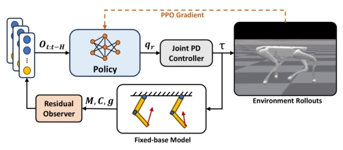
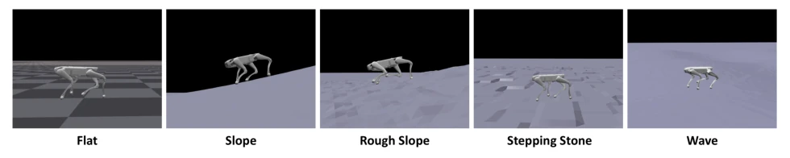
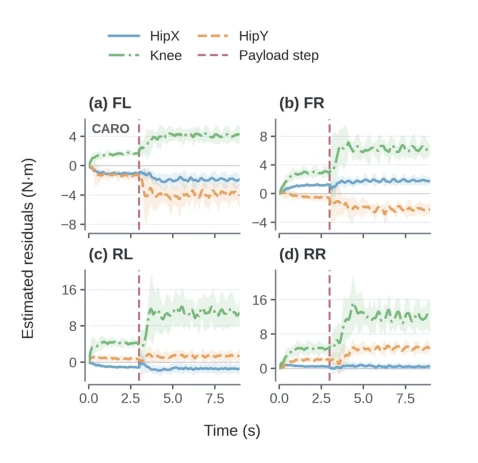
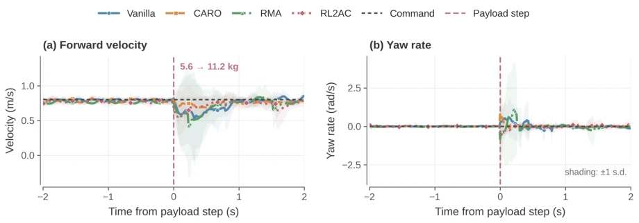
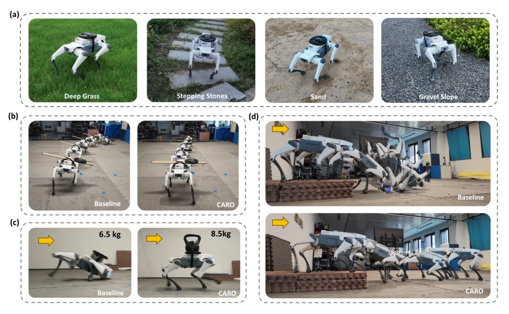
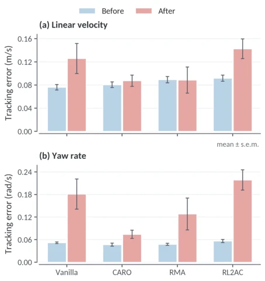

CARO 这招“以简驭繁”玩得挺溜，直接把复杂的浮体动力学简化为固定基座模型，硬是把接触力、负载变化这些“黑盒”效应压缩成一个残差信号喂给 RL 策略。这思路有点像“我不懂你具体怎么摔的，但我看你腿抖得厉害，赶紧调整姿势”。它不需要昂贵的力矩传感器，也不搞复杂的接触状态估计，纯靠“算账”（模型与现实的偏差）来感知环境突变，在零样本迁移上确实比那些只会“死记硬背”的 Vanilla PPO 和依赖隐式适应的 RMA 强不少。不过，作者吹嘘的“接触无关”其实有点文字游戏，它只是不显式估计接触力，但残差里依然充满了接触信息的影子。而且，这种简化模型在极高动态或剧烈晃动下，固定基座假设可能会崩，到时候残差可能全是噪声。总的来说，是个实用主义者的胜利，但理论上的完美性还得打个问号。
CARO's strategy of "mastering complexity through simplicity" is quite proficient, directly simplifying complex floating body dynamics into a fixed base model, and hard compressing "black box" effects such as contact forces and load changes into a residual signal fed to the RL policy. This idea is somewhat like 'I do not know exactly how you fell, but I see your legs shaking badly, hurry up and adjust posture'. It does not require expensive torque sensors, nor does it engage in complex contact state estimation, purely relying on 'balancing the books' (deviation between model and reality) to perceive environmental sudden changes, and in zero-shot transfer it is indeed much stronger than those who only 'rote memorize' Vanilla PPO and RMA relying on implicit adaptation. However, the author's boast of 'contact-independence' is actually a bit of wordplay; it just does not explicitly estimate contact forces, but the residual is still full of traces of contact information. Moreover, under extremely high dynamics or violent shaking, the fixed base assumption of this simplified model might collapse, at which time the residual might be all noise. Overall, it is a victory for pragmatists, but theoretical perfection still needs to be questioned.
Although Reinforcement Learning (RL) performs exceptionally well in quadruped robot motion control, once encountering situations outside the training distribution (such as suddenly carrying a heavy load, stepping on unfamiliar terrain), performance often collapses. Existing solutions mainly have two schools: one school relies on large-scale Domain Randomization and implicit adaptation modules (such as RMA [3], DreamWaQ [4]) to 'guess' environmental changes, but this lacks an explicit physical feedback channel and reacts sluggishly to sudden changes; the other school attempts to introduce model-based controllers (such as RL2AC [9], Neural-IMC [10]), but this usually requires precise floating body state estimation, torque sensors, or complex contact force solving, the deployment threshold on real robots is too high, and it is difficult to handle nonlinear contact interactions. CARO is precisely to solve this pain point: how to provide a feedback signal with clear physical structure that can directly reflect dynamic mismatch for the RL policy without extra sensors and complex contact estimation, thereby achieving true zero-shot robustness.
The core of CARO is a 'contact-independent residual observer' embedded in the RL control loop. The overall process is: RL policy outputs joint position increment -> low-level PD controller generates torque command -> observer uses fixed base Euler-Lagrange model to calculate residual -> residual as extra observation input to policy. Innovations lie in: 1. Fixed base model simplification: does not directly solve complex floating body dynamics, but assumes base fixed, only focuses on joint space. Thus, any external disturbance (such as load change, thrust, terrain undulation) leading to contact force distribution change and joint load change will be directly reflected in the residual between model prediction and actual torque. 2. Sensorless residual observation: Utilizing momentum observer structure, relying only on joint position, velocity, and torque commands, without torque sensors or floating body velocity estimation, can online estimate this residual signal. 3. Policy-level feedback rather than direct compensation: Unlike traditional methods using residual directly for torque compensation, CARO takes residual as RL policy input (Observation), letting policy learn itself how to adjust actions based on this 'body sensation'. This design preserves physical structure interpretability, and avoids stability risks brought by direct control, letting policy adaptively utilize residual signal for correction under out-of-distribution conditions.

Fig. 1. Overview of the CARO framework. The fixed-base Euler–Lagrange internal model is embedded within the RL control loop, and the resulting joint-level residual is provided to the policy as an adaptation signal.
Research was comprehensively validated on Isaac Gym simulation and DeepRobotics Lite3 real robot. In simulation, compared Vanilla PPO, RMA [3], and RL2AC [9], tested zero-shot generalization ability under 25 load-terrain combinations. Results show, CARO success rate still reached 64.5% at 3x nominal load, far exceeding other baselines (RMA was 36.4%, Vanilla was 0%). In sudden load change test, CARO's speed and heading recovery was fastest. Real robot experiments showed its excellent performance in unseen terrain (sand, grass, etc.), lateral load offset (8.5kg load), and 0.2m platform jump landing and other extreme scenarios, while Vanilla baseline fell frequently in these scenarios. Ablation experiments show, only adding residual observation can significantly boost robustness, without extra training courses or supervision signals.

Fig. 2. Simulation environments for zero-shot payload-terrain generalization. The robot is evaluated on five terrain types: flat, slope, rough slope, stepping stones, and wave. All terrain difficulty levels are set to 0.7.

Fig. 4. CARO residual estimates for the hip-x, hip-y, and knee joints of the (a) front-left (FL), (b) front-right (FR), (c) rear-left (RL), and (d) rear-right (RR) legs. Curves show trial means, shaded regions indicate trial-to-trial variability, and the vertical dashed line marks the payload step.

Fig. 3. Response to the abrupt payload change: (a) forward velocity and (b) yaw rate. Curves show trial means, shaded regions denote one standard deviation, and the vertical dashed line at t = 3.0 s marks the doubling of torso mass from 5.6 to 11.2 kg. The black dashed lines denote the commanded velocities.

Fig. 5. Real-world robustness experiments. (a) CARO traverses four representative unseen terrains while carrying a 2.5 kg payload. (b) Time-composited trials with a 2.5 kg payload attached laterally: the Vanilla baseline deviates from the commanded heading, whereas CARO maintains it. (c) The Vanilla baseline falls with a 6.5 kg payload, whereas CARO maintains stable forward locomotion with an 8.5 kg payload. (d) Time-composited landings from a 0.2 m platform: the Vanilla baseline falls after impact, whereas CARO recovers and continues forward. Successive overlaid poses indicate temporal progression; yellow arrows in (c) and (d) denote the commanded travel direction.

Fig. 6. Mean (a) linear-velocity and (b) yaw-rate tracking errors over the pre-step and post-step intervals. Error bars denote the standard error of the mean.